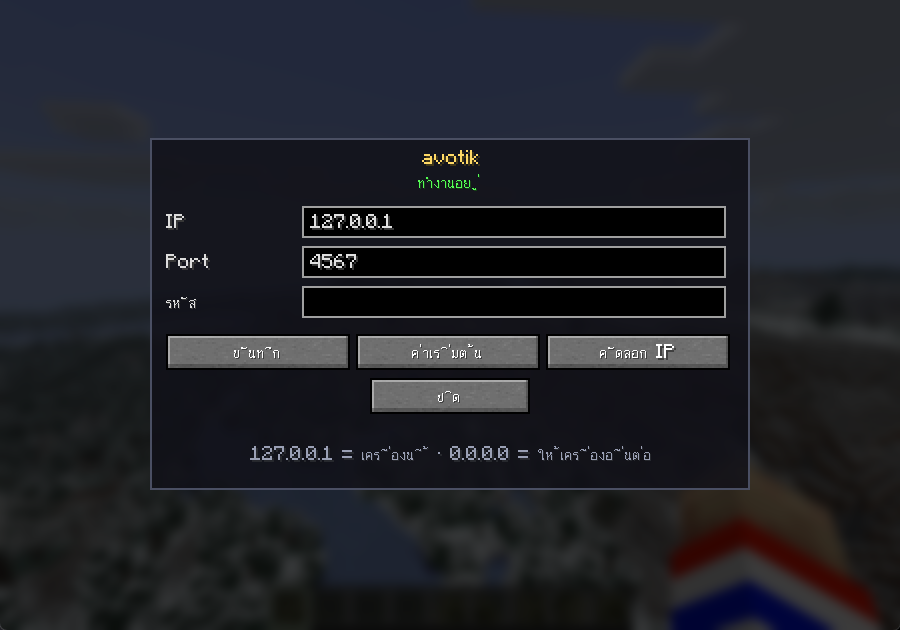

ตั้งค่าทุกอย่างในเกม ไม่ต้องแก้ไฟล์ กด Shift ขวา เปิดเมนู ใส่ IP / Port / รหัส แล้วกดบันทึก
127.0.0.1 Port 4567 ไม่มีรหัส ถ้าเปิด TikFinity บนเครื่องเดียวกับที่เล่นเกม ไม่ต้องตั้งอะไรเลย
เปิดได้ 3 ทาง เลือกทางไหนก็ได้:
กดตอนอยู่ในเกม เมนูเด้งขึ้นมาเลย ค่าเริ่มต้น
เปลี่ยนปุ่มได้ที่ Options → Controls → Key Binds → หมวด avotik
/avotikใช้ได้ทั้งในโลกตัวเองและตอนอยู่ในเซิร์ฟคนอื่น เพราะคำสั่งนี้ทำงานฝั่งเครื่องเรา ไม่ต้องให้เซิร์ฟรู้จัก
หน้าเมนูหลัก → Mods → avotik → ปุ่มตั้งค่า

| ช่อง / ปุ่ม | ทำอะไร |
|---|---|
| IP | ยอมให้ต่อจากทางไหน — 127.0.0.1 = เครื่องนี้เท่านั้น, 0.0.0.0 = ให้เครื่องอื่นต่อได้ |
| Port | พอร์ตที่เปิดฟัง ต้องตรงกับช่อง Port ใน TikFinity (ปกติ 4567) |
| รหัส | ว่าง = ไม่ตรวจรหัส · ถ้าใส่ ต้องใส่ค่าเดียวกันในช่อง Password ของ TikFinity |
| บันทึก | เซฟและเริ่มใหม่ทันที ไม่ต้องปิดเกม |
| ค่าเริ่มต้น | คืนค่าเดิมของมอด (127.0.0.1 / 4567 / ไม่มีรหัส) ใช้ตอนตั้งผิดแล้วต่อไม่ได้ |
| คัดลอก IP | คัดลอก IP ที่ต้องเอาไปใส่ TikFinity ไว้ในคลิปบอร์ด |
ตั้งผิดแล้วต่อไม่ได้? กด ค่าเริ่มต้น ในเมนู หรือพิมพ์ /avotik reset ก็กลับมาเหมือนตอนเพิ่งลงมอด
ไม่ต้องตั้งอะไรเลย
เปิดเกมค้างไว้ที่หน้าเมนูก็กด Test Connection ผ่านแล้ว แต่คำสั่งจะมีผลต่อเมื่อเข้าโลกหรือเข้าเซิร์ฟแล้ว
เช่นเปิด TikFinity บนโน้ตบุ๊กอีกเครื่อง หรือเกมรันอยู่คนละเครื่องกับที่ไลฟ์
0.0.0.0192.168.1.42เซิร์ฟไม่ต้องลงมอด มอดฝั่งเราจะส่งคำสั่งเข้าเซิร์ฟผ่านตัวผู้เล่นเอง ขอแค่ตัวเรามี op ในเซิร์ฟนั้น
/avotik — ตั้งค่าเหมือนเล่นคนเดียวทุกอย่าง127.0.0.1:4567)/avotik status จะบอกว่าคำสั่งกำลังจะไปไหน และเรามี op หรือเปล่า
ถ้าอยากให้เซิร์ฟรับคำสั่งเองโดยไม่ต้องมีใครอยู่ในเกม วาง jar ใน mods ของเซิร์ฟ Fabric แล้วตั้งค่าจาก console (พิมพ์โดยไม่ต้องมี /):
avotik bind all
avotik password รหัสยาวๆ
avotikบรรทัดสุดท้ายจะพ่น IP/Port ที่ต้องเอาไปใส่ TikFinity ออกมา · เปิด firewall พอร์ต 4567 ด้วย (คนละตัวกับพอร์ตเข้าเกม 25565)
โหมดนี้คำสั่งจะอ้างตำแหน่งผู้เล่นคนแรกที่ออนไลน์ ถ้าไม่มีใครอยู่ คำสั่งที่ใช้ ~ ~ ~ จะไปโผล่ที่จุด spawn
/avotikใช้ได้ทุกที่ที่ลงมอดไว้ รวมถึงตอนอยู่ในเซิร์ฟที่ไม่มีมอด
| คำสั่ง | ทำอะไร |
|---|---|
/avotik | เปิดเมนูตั้งค่า |
/avotik status | ดูสถานะ + IP/Port ที่ต้องใส่ + คำสั่งกำลังจะไปไหน |
/avotik bind local | รับเฉพาะเครื่องนี้ (127.0.0.1) |
/avotik bind all | เปิดให้เครื่องอื่นต่อ (0.0.0.0) |
/avotik port 4567 | เปลี่ยนพอร์ต |
/avotik password "รหัส" | ตั้งรหัส |
/avotik password clear | ลบรหัส |
/avotik reset | คืนค่าเริ่มต้นทั้งหมด |
/avotik restart | เริ่มตัวรับการเชื่อมต่อใหม่ |
จำเป็นเฉพาะตอนให้เครื่องอื่นต่อ (IP = 0.0.0.0)
netsh advfirewall firewall add rule name="avotik 4567" dir=in action=allow protocol=TCP localport=4567รันใน PowerShell/CMD แบบ Run as administrator (ลบกฎ: เปลี่ยน add เป็น delete)
sudo ufw allow 4567/tcpรันจากเครื่องที่จะเปิด TikFinity:
curl http://<IP เครื่องที่รันเกม>:4567/v1/serverได้ JSON ที่มี "name": "TikFinity Mod" = ต่อได้ · ค้างหรือ connection refused = firewall ปิด หรือ IP ในเมนูยังเป็น 127.0.0.1
127.0.0.1 — มอดจะเตือนให้เองเมื่อกดบันทึก1234| อาการ | สาเหตุ | วิธีแก้ |
|---|---|---|
| ช่องรหัสว่างเปล่า | ปกติ — ยังไม่ได้ตั้งรหัส | ว่าง = ไม่ตรวจรหัส ใช้ได้เลยถ้าอยู่เครื่องเดียวกัน |
| Test Connection ไม่ผ่าน (เครื่องเดียวกัน) | เกมยังไม่เปิด หรือพอร์ตชนกับโปรแกรมอื่น | เปิดเกมค้างไว้ · ดูสถานะบนสุดของเมนู ถ้าขึ้นแดงแปลว่าพอร์ตถูกใช้อยู่ |
| Test Connection ไม่ผ่าน (คนละเครื่อง) | IP ยังเป็น 127.0.0.1 หรือ firewall ปิด |
เปลี่ยนเป็น 0.0.0.0 + เปิดพอร์ตที่ firewall |
| ขึ้น Unauthorized / 401 | รหัสสองฝั่งไม่ตรงกัน | ใส่ให้ตรง หรือกด ค่าเริ่มต้น เพื่อล้างรหัส |
| สถานะขึ้นแดง "port ถูกใช้อยู่" | มีโปรแกรมอื่นจองพอร์ตอยู่ เช่นเซิร์ฟที่เปิดค้าง | ปิดโปรแกรมนั้น หรือเปลี่ยน Port เป็น 4568 แล้วแก้ใน TikFinity ตาม |
| ต่อได้ แต่คำสั่งไม่เกิดอะไร (ในเซิร์ฟ) | ไม่มี op ในเซิร์ฟนั้น | พิมพ์ /avotik status ดูบรรทัด "คำสั่งจะไป" — ถ้าบอกว่าไม่มีสิทธิ์ op ต้องให้เซิร์ฟ op ให้ก่อน |
| ต่อได้ แต่คำสั่งไม่เกิดอะไร (เล่นคนเดียว) | ยังไม่ได้เข้าโลก | เข้าโลกก่อน แล้วลองใหม่ |